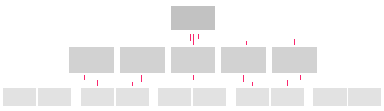

Application Structure
Before choosing your first pattern, determine the structure of your application (flat or hierarchical) and then review the articles on Application Layers and Panel Structure. You should then be able to choose your first pattern (Always Viewing or Activity), which will set the scope for your application.
Flat Applications
General Structure
A flat application structure is used to present a single activity in a single view, or multiple activities that exist as peers (i.e., each activity has direct access to the other activities).
How to Use
Single Activity
Single Activity applications, such as a Clock, Calculator, or Calendar, are not common on the TV. These apps tend to be more appropriate for personal computing devices such as phones, tablets, or computers. However, there are some fun single activity applications that can be created for TV, such as the Yule Log, Weather, or simple games like Mahjong.
Related Patterns: Full Screen Basement, Popup, Playback Controls
Hierarchical Applications
General Structure
A hierarchical application structure supports multiple activities with deep navigation, where each level in the hierarchy has a different level of detail. Switching activities requires navigating to a higher level (in most cases, the top level).

How to Use
Top Level
The Top Level (Panel 1) of your application is commonly used as a launch pad for users to explore new items in different categories of the application, featured content, and/or promotions. Only information of the greatest importance to the user should be displayed here, along with the means to navigate the application’s main menu. This is where first impressions are made, so keep the content and layout visually rich and engaging.
Related Patterns: Hub and Spoke, Displaying Data, Panel Patterns
Category Views
Category Views provide a slightly zoomed out view on an entire category of the application. This view commonly takes the form of a list with minimal details for each list item. When appropriate, the list should be organized with a dynamically interesting layout, while remaining intuitive and easy to navigate.
Related Patterns: Displaying Data, Lists and Grids, Acting on Data, Panel Patterns
Detail Pages
The Detail Page is either the final destination in the app or the launching pad to the final destination. While the layout will vary depending on the content type, it should follow a simple pattern of displaying the most important information on top, with all other information easily navigable through simple scrolling. Complex detail pages should group different detail types into sections that only display a preview or subset of the data, along with a More button to expand the section either inline or in the next panel. Detail pages are also the best location for editing object-specific data (e.g., name, contact info, etc.).
Related Patterns: Displaying Data, Detail Pages, Jump to Anchor, Edit Mode, Panel Patterns
Full Screen Basement
TV applications should take full advantage of the immersive experience the large screen affords the user. Whether the user is viewing a single video or photo, or participating in a video chat, the default/primary experience should be full-screen. The Always Viewing Pattern makes the most of this by always showing the basement and always loading selected content directly into the full screen basement.
Related Patterns: Video Playback, Slideshows